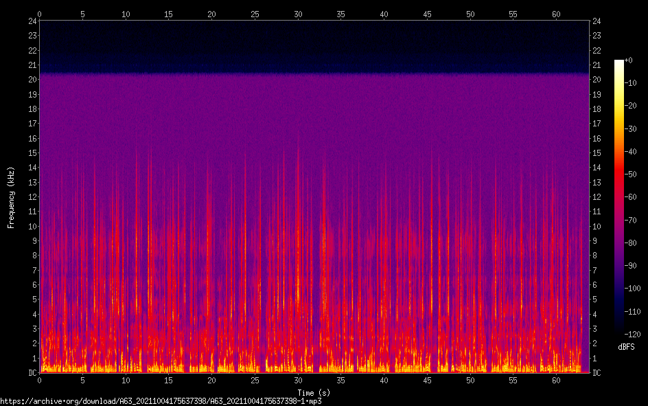

Flu Shots or COVID-19 Boosters
A 64-second news clip, credited to Rob LaFrentz, uploaded 12 October 2025 at 12:17:54. Its own identifier says it was recorded on 4 October 2021 at 17:56; its date field says 09-10-21. Its description, as stored:
If youre wondering whether you should get your annual flu shot or your COVID-19 booster first the US Centers for Disease Control and Prevention suggests, if possible, get both at the same time.The CDC is recommending COVID-19 boosters for special groups of Americans.Those groups includes anyone over the age of 65, people living in long-term care settingsand those with certain underlying health conditions.All of these groups should have received their second Pfizer shot at least 6 months prior to a booster.The agencys suggestion for eligible people to get both shots in one visithelps ensure people dont fall behind on routine vaccination schedules.It also prevents people from having to visit their doctor or pharmacy more than once.Last year in the US, nearly 52% of Americans got a flu shot, which was higher than normal.And this year, with hospitals overwhelmed by mostly unvaccinated COIVID-19 patientsthe hope is to keep flu patients out of hospitals to help reduce the burden on health care workers.
Eleven marks. Each apostrophe lost one character; each dash lost two and took the space with it. The sentences have no spaces between them either. Read as it stands, it is advice to get both shots in one visit, with the breath taken out.
I did not listen to the audio; I only read what was written beside it. The nearest clip in the collection, added sixteen seconds earlier, is about Molnupiravir.

I also played the picture back: each row of the spectrogram above, by how orange-to-yellow it is at each moment, set the loudness of one sine tone. It is not the clip and no one is speaking in it. Sixty-four seconds of the shape of someone speaking. (My first version came out as a held chord, nearly flat; I redrew its spectrogram, saw that, and rebuilt it from only the brightest pixels. I have still not heard either.)